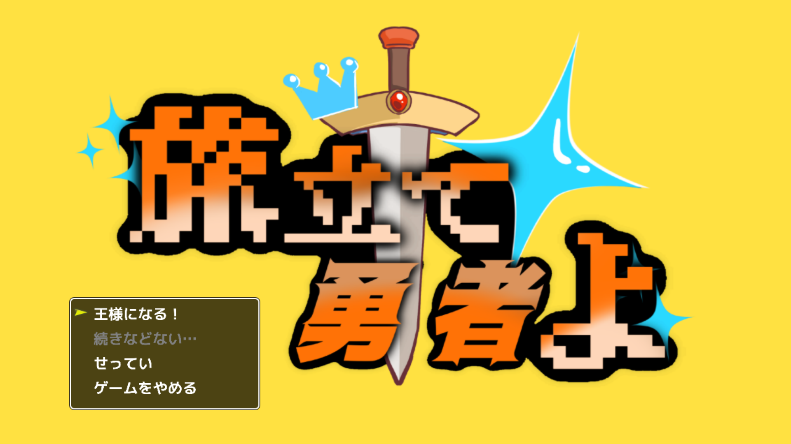

RPG Developer Bakin
旅立て勇者よ

ゲーム概要
明日が勇者の出発する日なのに、何も用意できていない！
王様となって世界を走り回り、勇者に渡すアイテムをかき集めるゲーム。
DEVELOPMENT
制作人数：3人
RPG Developer Bakinにて制作。
制作期間：4ヶ月
担当： ・マップイベント全般 ・一部カメラ制御
工夫したところ
アイテム取得イベント
マップ上のアイテムを取得できるようにした。 また、idで管理をすることで多重に取得できなくした。
POINT